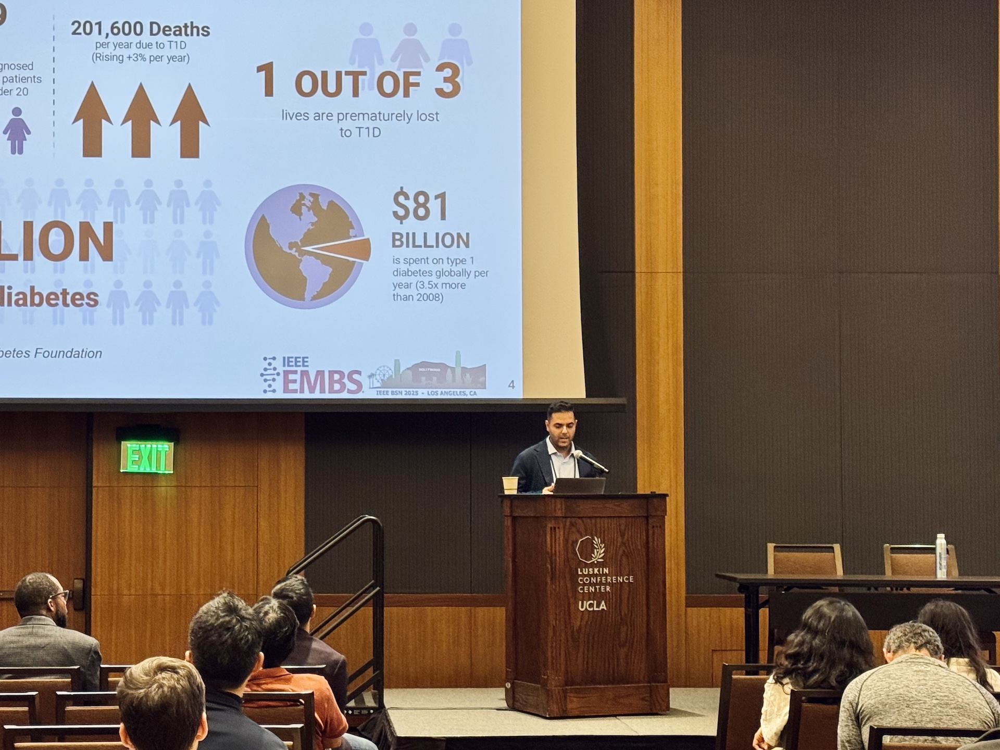
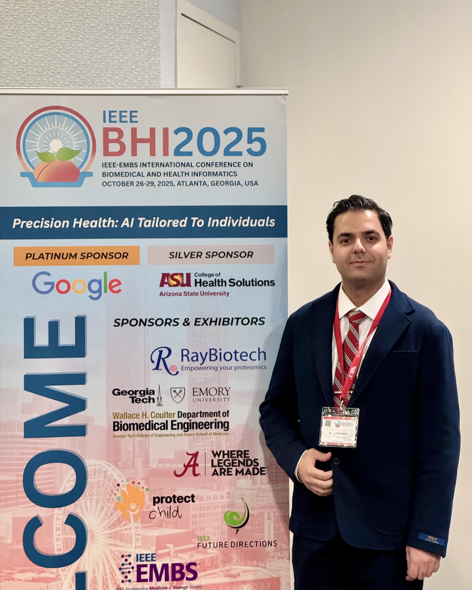
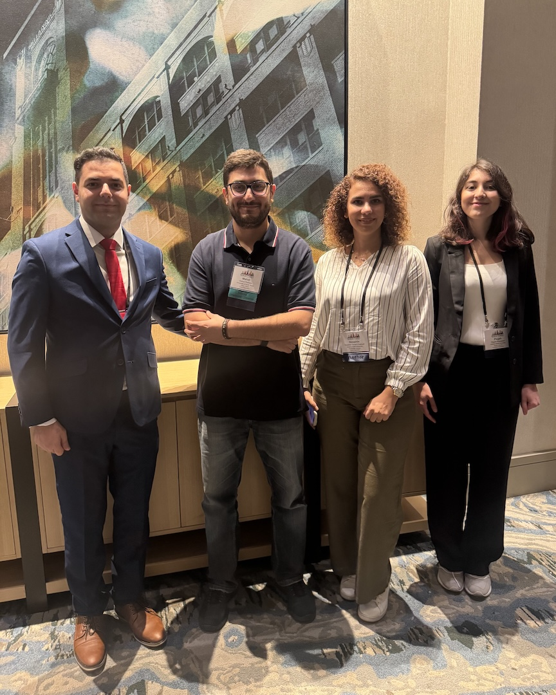
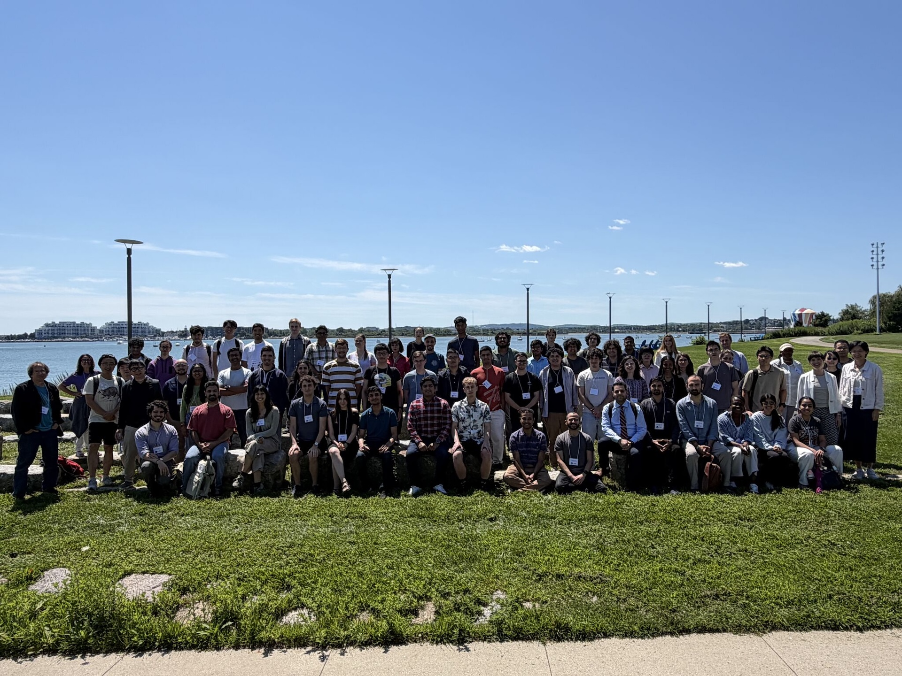
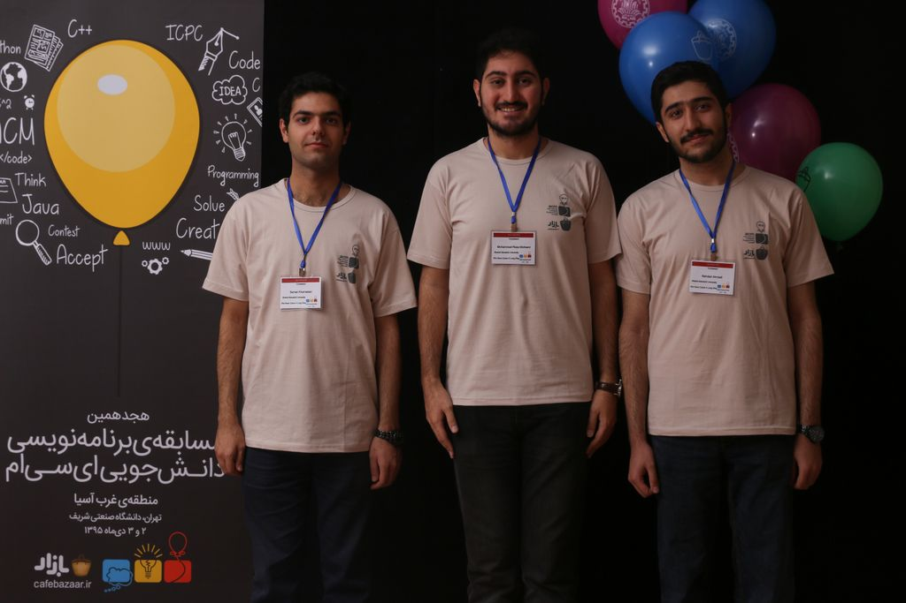

Digital health technologies are becoming increasingly pervasive. These tools increase opportunities to measure physiology and behavior in the wild (i.e., outside the laboratory). Evolving sensing technologies and data analytic solutions could transform sensor data into clinically actionable information. The IEEE-EMBS International Conference on Body Sensor Networks – Computational Medicine: Expanding Health through Sensing and AI (BSN 2025) will address digital health research and offer participants a unique forum to discuss the key issues and innovative solutions for sensor and systems development, data analytics and modeling, data management and interpretation, and communications.

The IEEE-EMBS International Conference on Biomedical and Health Informatics (BHI), sponsored by the IEEE Engineering in Medicine and Biology Society, is EMBS's primary technical conference on informatics and computing in healthcare and life sciences. It provides a forum for basic and translational research on big data analytics and machine learning addressing the acquisition, transmission, processing, security, visualization, and interpretation of large volumes of multi-modal biomedical data, alongside related social, behavioral, environmental, and geographical data, and for informatics solutions integrating artificial intelligence, mHealth, e-Health, human-computer interfaces, telemedicine, bioinformatics, sensors, imaging, and public health monitoring toward patient-centric, outcome-driven care.

Digital health technologies are becoming increasingly pervasive. These tools increase opportunities to measure physiology and behavior in the wild (i.e., outside the laboratory). Evolving sensing technologies and data analytic solutions could transform sensor data into clinically actionable information. The IEEE-EMBS International Conference on Body Sensor Networks — NextGen Health: Sensor Innovation, AI, and Social Responsibility (BSN 2024) digital health research and offered participants a unique forum to discuss the key issues and innovative solutions for sensor and systems development, data analytics and modeling, data management and interpretation, and communications.

The Institute for Artificial Intelligence and Fundamental Interactions (IAIFI) is enabling physics discoveries and advancing foundational AI through the development of novel AI approaches that incorporate first principles, best practices, and domain knowledge from fundamental physics. The Summer School included lectures and events illustrating interdisciplinary research at the intersection of AI and physics, hands-on code-based tutorials building on the lecture material, and a hackathon project.

The International Collegiate Programming Contest is an algorithmic programming contest for college students. Teams of three, representing their university, work to solve the most real-world problems, fostering collaboration, creativity, innovation, and the ability to perform under pressure. Through training and competition, teams challenge each other to raise the bar on the possible. Quite simply, it is the oldest, largest, and most prestigious programming contest in the world.